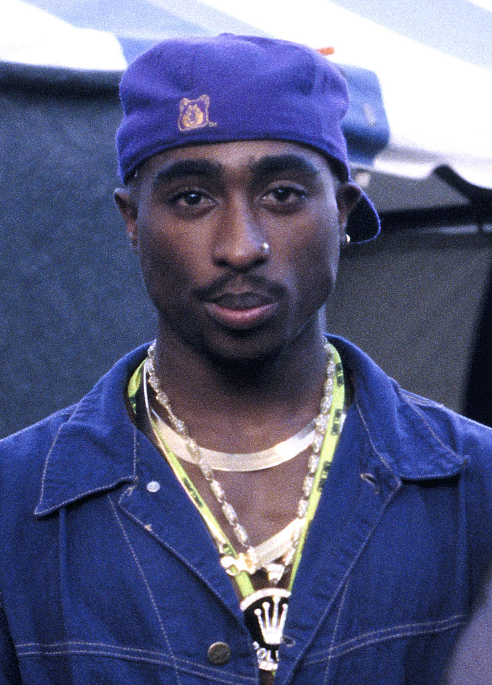

Tupac Amaru Shakur

One of The Greatest Rappers of All Time.
The Rose That Grew From Concrete
Did you hear about the rose that grew
from a crack in the concrete?
Proving nature's law is wrong it
learned to walk with out having feet.
Funny it seems, but by keeping its dreams,
it learned to breathe fresh air.
Long live the rose that grew from concrete
when no one else ever cared.
click here to learn more about Tupac Amaru Tupac_Shakur